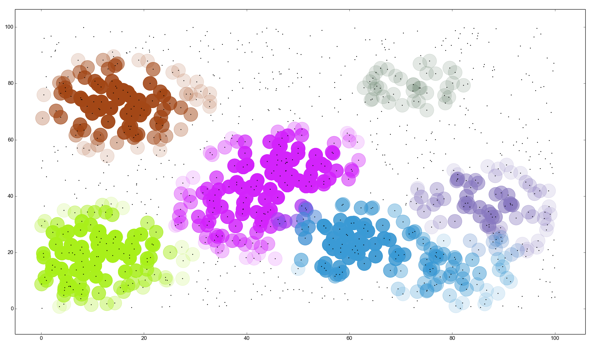

Assorted Visualisations
Some of the work I am pursuing these days, is in the area of Machine Learning, and Datamining and results in some breathtaking visualisations. I consider them to be smorgasbord of ART, SCIENCE and MATH. Some of the interesting ones are archived on this page. Check them out:
7/09/2014 - exdb.py
